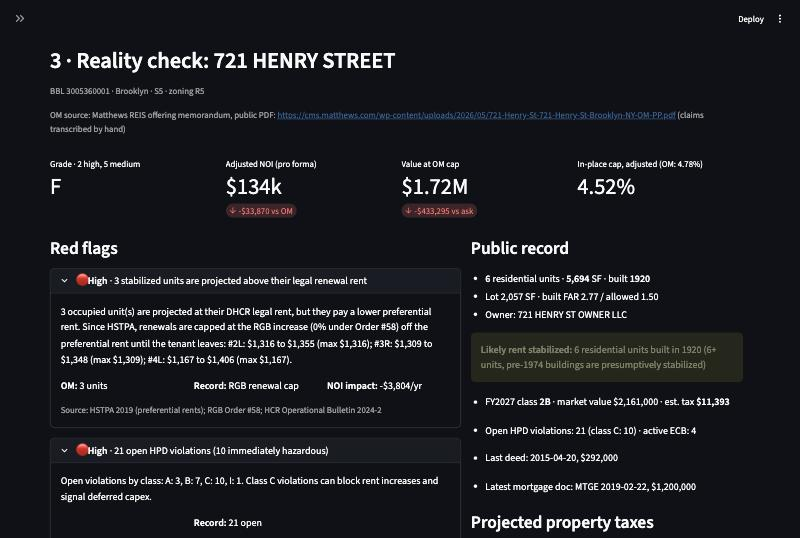

OM Reality Check
An automated second opinion on NYC multifamily offering memoranda. It checks the broker's claims against seven city datasets and current rent and tax law, then rebuilds NOI and value.

The problem
A broker's offering memorandum is a marketing document. The headline cap rate is often on pro forma income, rent-stabilized units get projected to rents the law no longer allows, and open violations don't make it into the deck. Checking all of that by hand means pulling seven city datasets and reading rent and tax law for every listing.
What I built
A Streamlit app that checks an NYC multifamily OM against public records and current rent and tax law, flags every claim that doesn't hold up (with the source), and rebuilds the NOI and value with the corrections. Claude reads the OM PDF into structured claims with page-cited quotes, a person reviews them, and 19 independent rules run against a public-record profile of the lot.
The output is a graded report (A to F), flags with NOI impact and sources, a 5-year adjusted projection (legal rent path, projected taxes, expense floor), the value at the OM's own cap rate, and a downloadable memo.
What it checks
| Area | Check | Data source |
|---|---|---|
| Physical | Unit count, gross SF, year built | NYC MapPLUTO |
| Zoning | Claimed air rights vs unused FAR; overbuilt lots | MapPLUTO |
| Rent regulation | Likely stabilization; "go to market" upside banned by HSTPA 2019; preferential rents projected to legal rent; RS growth vs RGB Orders #57-58; renovation premiums vs 2024 IAI caps | MapPLUTO, DOF exemptions, RGB, NYS HCR |
| Taxes | OM taxes vs DOF roll; 421-a / J-51 expiry in the hold; Class 2 cap phase-in; stated tax class | DOF assessment roll and exemptions |
| Operations | Expense ratio vs RGB Income & Expense Study; vacancy | RGB I&E Study |
| Pricing | Headline cap on pro forma vs in place; cap math; recent sales | OM's own numbers, ACRIS |
| Condition | Open class C HPD violations, active DOB/ECB penalties | HPD, DOB |
Results on real OMs
I ran three real offering memoranda through the tool, all posted publicly by a broker for Brooklyn walk-ups in November 2026. Every finding comes from live city data, not from the OM.
- 721 Henry St, Carroll Gardens: grade F. The headline 7.81% cap is on pro forma income (4.78% in place). Three stabilized tenants are projected at legal rents above their preferential rents, which HSTPA bars on renewal. Ten open class C HPD violations and $33k in ECB penalties the OM never mentions. Value at the OM's own cap: $1.72M against a $2.15M ask.
- 756 Greene Ave, Bed-Stuy: grade C. Building SF overstated 18% against city records and a 21% expense ratio. ACRIS shows it sold in October 2026 for $2.2M, 8% under the ask and within 5% of the tool's value.
- 378 Central Ave, Bushwick: grade B. The "8.0% pro forma cap" matches neither the OM's own current nor pro forma NOI. Otherwise clean, and its air-rights claim checks out against zoning.
NOI averaged about 11% lower after the corrections. One deal graded B, so the tool isn't just negative: it passes OMs that hold up.
What real OMs taught the rules
The first version passed a fictional test OM. Real OMs exposed gaps, each now covered by a test: preferential rents capped at the RGB increase on the rent actually paid, like-for-like cap rate comparisons, ACRIS checks for listings that already sold, and DHCR rent-history prompts for "free market" units in old buildings.
Limits
This is a screening tool, not an appraisal, legal or zoning opinion. Rent-stabilization status is inferred and should be confirmed with DHCR rent histories. Air rights use PLUTO FAR and exclude City of Yes bonuses and zoning lot mergers. Taxes hold the rate flat.
Next projectMultifamily rent roll monitor →